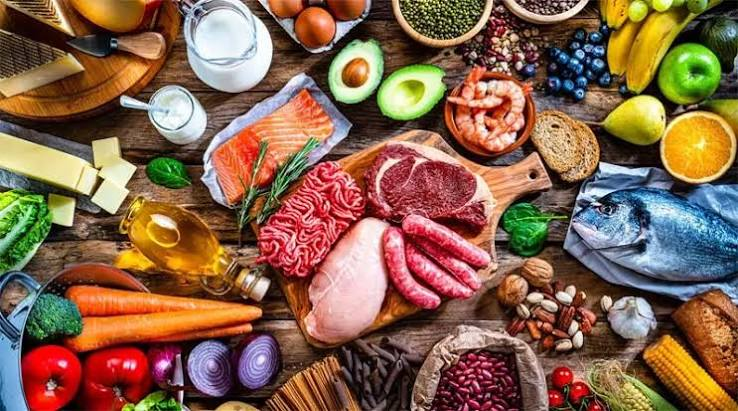
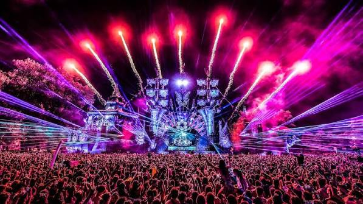

Modalidade Urbana
Transporte
Prefeitura lança um novo plano de mobilidade urbana.
Lucas Silva
Leia mais
Gastronomia em BH
Gastronomia
Gastronomia mineira recebe prêmio internacional.
Henrique Araujo
Leia maisTecnologia 6G
Tecnologia
A tecnologia 6G é a proxima geração de redes móveis.
Guilherme Azevedo
Leia mais
Festival de Música
Cultura
Belo Horizonte tem várias festivais de música, como Festival planeta Brasil que é o maior da cidade, e a Virada Cultural, um evento gratuito de 24 hrs focado em diversidade artística.
Weslley Henrique
Leia mais